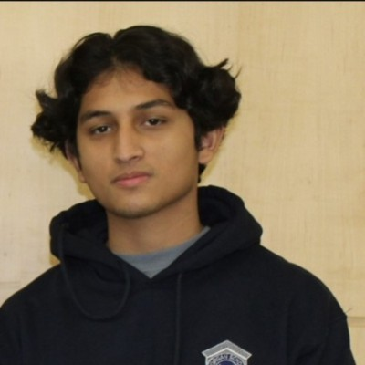
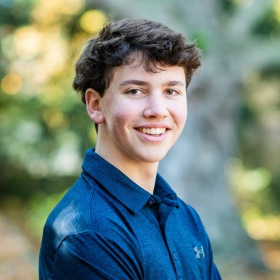

After reflecting on the difficulty of our college application experience as first-generation, low-income Latino students, we strived for change. Our mission at Gambiarra is to level the playing field and provide a free and complete collection of opportunities for Latinx students to achieve higher education. The Urban Dictionary defines Gambiarra as a “means to use improvised methods/solutions to solve a problem, with any available material.” It embodies ingenuity, resourcefulness, and an innate desire to help others solve their problems. After failing for the subsequent trial, we can go beyond what’s expected of us and come out with an ingenious solution or valuable knowledge.
Knowledge shapes your future, and through these scholarships, experiences, and enrichment programs, students will be trendsetters and examples of excellence. We strive to remove financial constraints and cultural barriers from the dreams of high achieving Latinx FGLI students. Through our database, we hope students can achieve their full potential and strive to the most prestigious universities in the world and completely change the futures of themselves, their family, and their communities.
Matheus Silva
Matheus is a current freshman at Harvard.

Abel Rodriguez
Abel is a current freshman at Harvard.

Lucas Silva
Lucas Silva is a current senior at Valley Regional High School.

Jack Finnegan
Jack is a current freshman at MIT and the lead developer for Gambiarra.